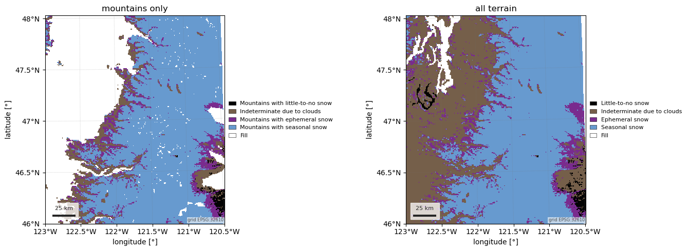
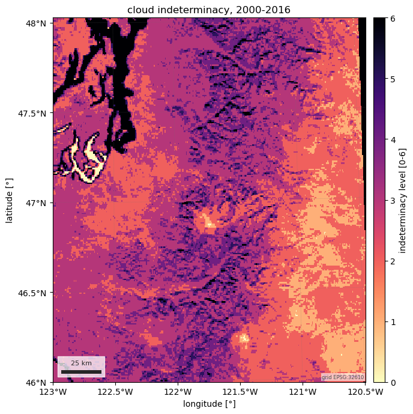

Note
Go to the end to download the full example code.
Mountain snow mask (Wrzesien et al.)#
Wrzesien et al. (2019) classified the MODIS MOD10A2 snow-cover record for
2000-2016 at 30 arcsec into little-to-no, ephemeral and seasonal snow, and
intersected it with a mountain definition based on GTOPO30 relief. The result
is three layers: mountain_snow (the classes over mountains only),
snow (the same classes over all terrain) and clouds (how often the
composite was indeterminate because of cloud).
One route, source="zenodo", with no credentials: one zipped GeoTIFF per
layer, fetched once into the easysnowdata cache.
The figures show the mountain and all-terrain layers side by side across the central Cascades and Puget lowlands, and the cloud-indeterminacy layer.
import matplotlib.pyplot as plt
import numpy as np
import easysnowdata as esd
aoi = (-123.0, 46.0, -120.5, 48.0) # the central Cascades, Puget Sound to Yakima
box = esd.parse_aoi(aoi)
grid = box.to_geobox(crs="utm", resolution=500) # every map below is drawn on this grid
print(box)
print(grid)
AOI(bounds=(-123.0000, 46.0000, -120.5000, 48.0000), clip=True)
GeoBox((451, 388), Affine(500.0, 0.0, 500000.0,
0.0, -500.0, 5319500.0), CRS('EPSG:32610'))
Where the product comes from, and what the route asks for.
for src in esd.catalog.get("mountain-snow-mask").sources:
print(f"{src.id:22} {src.title:45} {', '.join(src.requires) or 'no account'}")
zenodo Zenodo zip no account
The two class layers. In the mountain layer, Fill (255) is every pixel
that is not mountain by the relief criterion, so the lowlands drop out and
the mask says where seasonal snow is also mountain snow. The all-terrain
layer keeps them and classifies the Puget lowlands as ephemeral.
The layers are geographic; the box is loaded with a 2 km margin and each
is drawn on the AOI’s UTM grid, resampled nearest so the classes survive.
mountain_da = esd.snow.mountain_snow_mask.load(box.buffer(2000), layer="mountain_snow")
terrain_da = esd.snow.mountain_snow_mask.load(box.buffer(2000), layer="snow")
print(mountain_da.attrs["flag_meanings"])
fig, axes = plt.subplots(1, 2, figsize=(14, 5))
esd.plotting.categorical(
mountain_da.odc.reproject(grid, resampling="nearest"),
ax=axes[0],
title="mountains only",
)
esd.plotting.categorical(
terrain_da.odc.reproject(grid, resampling="nearest"),
ax=axes[1],
title="all terrain",
)
fig.tight_layout()
values, counts = np.unique(mountain_da.values, return_counts=True)
for value, count in zip(values, counts):
print(f"class {value:3d}: {count:6d} pixels")

0%| | 0.00/13.7M [00:00<?, ?B/s]
0%| | 11.3k/13.7M [00:00<02:09, 106kB/s]
0%| | 39.9k/13.7M [00:00<01:44, 130kB/s]
1%|▎ | 96.3k/13.7M [00:00<00:52, 259kB/s]
1%|▍ | 135k/13.7M [00:00<00:46, 292kB/s]
1%|▌ | 201k/13.7M [00:00<00:38, 354kB/s]
2%|▊ | 278k/13.7M [00:00<00:32, 415kB/s]
3%|█▏ | 421k/13.7M [00:01<00:23, 562kB/s]
4%|█▍ | 502k/13.7M [00:01<00:23, 560kB/s]
4%|█▋ | 583k/13.7M [00:01<00:23, 559kB/s]
5%|██ | 714k/13.7M [00:01<00:19, 663kB/s]
6%|██▍ | 861k/13.7M [00:01<00:16, 769kB/s]
7%|██▋ | 943k/13.7M [00:01<00:17, 707kB/s]
8%|███ | 1.09M/13.7M [00:01<00:15, 798kB/s]
9%|███▎ | 1.17M/13.7M [00:02<00:17, 725kB/s]
10%|███▋ | 1.32M/13.7M [00:02<00:15, 810kB/s]
11%|████ | 1.45M/13.7M [00:02<00:14, 836kB/s]
11%|████▎ | 1.53M/13.7M [00:02<00:15, 759kB/s]
12%|████▌ | 1.63M/13.7M [00:02<00:16, 730kB/s]
13%|████▉ | 1.76M/13.7M [00:02<00:15, 779kB/s]
13%|█████ | 1.84M/13.7M [00:02<00:16, 714kB/s]
15%|█████▌ | 1.99M/13.7M [00:03<00:14, 802kB/s]
15%|█████▊ | 2.07M/13.7M [00:03<00:15, 730kB/s]
16%|█████▉ | 2.15M/13.7M [00:03<00:16, 680kB/s]
16%|██████▏ | 2.22M/13.7M [00:03<00:18, 618kB/s]
17%|██████▍ | 2.32M/13.7M [00:03<00:18, 626kB/s]
18%|██████▊ | 2.45M/13.7M [00:03<00:15, 707kB/s]
19%|███████ | 2.53M/13.7M [00:03<00:16, 665kB/s]
19%|███████▎ | 2.63M/13.7M [00:04<00:16, 668kB/s]
20%|███████▌ | 2.71M/13.7M [00:04<00:17, 635kB/s]
21%|███████▊ | 2.81M/13.7M [00:04<00:16, 646kB/s]
21%|███████▉ | 2.87M/13.7M [00:04<00:18, 588kB/s]
22%|████████▍ | 3.02M/13.7M [00:04<00:15, 708kB/s]
23%|████████▌ | 3.10M/13.7M [00:04<00:15, 665kB/s]
24%|█████████ | 3.25M/13.7M [00:04<00:13, 767kB/s]
25%|█████████▍ | 3.38M/13.7M [00:05<00:12, 807kB/s]
26%|█████████▊ | 3.53M/13.7M [00:05<00:11, 868kB/s]
27%|██████████ | 3.62M/13.7M [00:05<00:12, 806kB/s]
27%|██████████▍ | 3.76M/13.7M [00:05<00:11, 832kB/s]
29%|██████████▊ | 3.90M/13.7M [00:05<00:11, 884kB/s]
29%|███████████▏ | 4.02M/13.7M [00:05<00:11, 855kB/s]
30%|███████████▍ | 4.12M/13.7M [00:05<00:12, 793kB/s]
31%|███████████▋ | 4.20M/13.7M [00:06<00:13, 725kB/s]
31%|███████████▉ | 4.28M/13.7M [00:06<00:13, 676kB/s]
32%|████████████▎ | 4.43M/13.7M [00:06<00:11, 775kB/s]
33%|████████████▋ | 4.56M/13.7M [00:06<00:11, 812kB/s]
34%|█████████████ | 4.70M/13.7M [00:06<00:10, 872kB/s]
35%|█████████████▍ | 4.84M/13.7M [00:06<00:10, 880kB/s]
36%|█████████████▋ | 4.92M/13.7M [00:06<00:10, 798kB/s]
37%|█████████████▉ | 5.00M/13.7M [00:07<00:11, 723kB/s]
38%|██████████████▎ | 5.15M/13.7M [00:07<00:10, 797kB/s]
39%|██████████████▋ | 5.29M/13.7M [00:07<00:09, 860kB/s]
40%|███████████████ | 5.41M/13.7M [00:07<00:09, 837kB/s]
41%|███████████████▍ | 5.54M/13.7M [00:07<00:09, 855kB/s]
42%|███████████████▊ | 5.69M/13.7M [00:07<00:08, 902kB/s]
42%|████████████████▏ | 5.80M/13.7M [00:08<00:09, 868kB/s]
43%|████████████████▎ | 5.89M/13.7M [00:08<00:09, 787kB/s]
44%|████████████████▌ | 5.97M/13.7M [00:08<00:10, 713kB/s]
44%|████████████████▊ | 6.04M/13.7M [00:08<00:11, 647kB/s]
45%|█████████████████ | 6.13M/13.7M [00:08<00:11, 636kB/s]
46%|█████████████████▎ | 6.22M/13.7M [00:08<00:11, 648kB/s]
47%|█████████████████▋ | 6.37M/13.7M [00:08<00:09, 757kB/s]
47%|█████████████████▉ | 6.47M/13.7M [00:09<00:09, 731kB/s]
48%|██████████████████▏ | 6.55M/13.7M [00:09<00:10, 679kB/s]
49%|██████████████████▋ | 6.70M/13.7M [00:09<00:08, 778kB/s]
50%|██████████████████▊ | 6.78M/13.7M [00:09<00:09, 706kB/s]
50%|███████████████████ | 6.85M/13.7M [00:09<00:10, 640kB/s]
51%|███████████████████▍ | 6.98M/13.7M [00:09<00:09, 714kB/s]
52%|███████████████████▋ | 7.07M/13.7M [00:09<00:09, 702kB/s]
52%|███████████████████▉ | 7.17M/13.7M [00:10<00:09, 694kB/s]
53%|████████████████████▏ | 7.27M/13.7M [00:10<00:09, 689kB/s]
54%|████████████████████▍ | 7.35M/13.7M [00:10<00:09, 651kB/s]
54%|████████████████████▋ | 7.44M/13.7M [00:10<00:09, 625kB/s]
55%|█████████████████████ | 7.57M/13.7M [00:10<00:08, 706kB/s]
56%|█████████████████████▎ | 7.65M/13.7M [00:10<00:09, 662kB/s]
57%|█████████████████████▋ | 7.79M/13.7M [00:10<00:07, 768kB/s]
58%|█████████████████████▉ | 7.91M/13.7M [00:11<00:07, 774kB/s]
58%|██████████████████████▏ | 7.99M/13.7M [00:11<00:08, 702kB/s]
59%|██████████████████████▌ | 8.10M/13.7M [00:11<00:07, 728kB/s]
60%|██████████████████████▊ | 8.19M/13.7M [00:11<00:08, 679kB/s]
61%|███████████████████████ | 8.29M/13.7M [00:11<00:07, 678kB/s]
61%|███████████████████████▎ | 8.40M/13.7M [00:11<00:07, 711kB/s]
62%|███████████████████████▌ | 8.48M/13.7M [00:11<00:07, 666kB/s]
63%|███████████████████████▉ | 8.61M/13.7M [00:12<00:06, 734kB/s]
64%|████████████████████████▎ | 8.76M/13.7M [00:12<00:06, 814kB/s]
65%|████████████████████████▌ | 8.84M/13.7M [00:12<00:06, 738kB/s]
65%|████████████████████████▊ | 8.94M/13.7M [00:12<00:06, 721kB/s]
66%|█████████████████████████ | 9.01M/13.7M [00:12<00:07, 654kB/s]
66%|█████████████████████████▎ | 9.09M/13.7M [00:12<00:07, 611kB/s]
67%|█████████████████████████▍ | 9.17M/13.7M [00:12<00:07, 596kB/s]
68%|█████████████████████████▊ | 9.28M/13.7M [00:13<00:06, 654kB/s]
69%|██████████████████████████▏ | 9.43M/13.7M [00:13<00:05, 758kB/s]
70%|██████████████████████████▌ | 9.56M/13.7M [00:13<00:05, 798kB/s]
71%|██████████████████████████▊ | 9.64M/13.7M [00:13<00:05, 723kB/s]
71%|███████████████████████████ | 9.72M/13.7M [00:13<00:05, 680kB/s]
72%|███████████████████████████▎ | 9.81M/13.7M [00:13<00:05, 645kB/s]
73%|███████████████████████████▋ | 9.94M/13.7M [00:13<00:05, 722kB/s]
73%|███████████████████████████▉ | 10.0M/13.7M [00:14<00:05, 708kB/s]
74%|████████████████████████████▎ | 10.2M/13.7M [00:14<00:04, 797kB/s]
76%|████████████████████████████▋ | 10.3M/13.7M [00:14<00:03, 860kB/s]
76%|████████████████████████████▉ | 10.4M/13.7M [00:14<00:04, 779kB/s]
77%|█████████████████████████████▎ | 10.5M/13.7M [00:14<00:04, 773kB/s]
78%|█████████████████████████████▋ | 10.7M/13.7M [00:14<00:03, 809kB/s]
79%|█████████████████████████████▊ | 10.7M/13.7M [00:15<00:03, 736kB/s]
80%|██████████████████████████████▎ | 10.9M/13.7M [00:15<00:03, 819kB/s]
80%|██████████████████████████████▍ | 11.0M/13.7M [00:15<00:03, 741kB/s]
81%|██████████████████████████████▉ | 11.1M/13.7M [00:15<00:03, 823kB/s]
82%|███████████████████████████████▎ | 11.2M/13.7M [00:15<00:02, 843kB/s]
83%|███████████████████████████████▌ | 11.3M/13.7M [00:15<00:03, 765kB/s]
83%|███████████████████████████████▋ | 11.4M/13.7M [00:15<00:03, 699kB/s]
85%|████████████████████████████████▏ | 11.6M/13.7M [00:16<00:02, 793kB/s]
85%|████████████████████████████████▎ | 11.6M/13.7M [00:16<00:02, 725kB/s]
86%|████████████████████████████████▊ | 11.8M/13.7M [00:16<00:02, 810kB/s]
87%|████████████████████████████████▉ | 11.9M/13.7M [00:16<00:02, 736kB/s]
88%|█████████████████████████████████▎ | 12.0M/13.7M [00:16<00:02, 718kB/s]
88%|█████████████████████████████████▍ | 12.0M/13.7M [00:16<00:02, 671kB/s]
89%|█████████████████████████████████▉ | 12.2M/13.7M [00:16<00:01, 772kB/s]
90%|██████████████████████████████████▎ | 12.3M/13.7M [00:17<00:01, 808kB/s]
91%|██████████████████████████████████▋ | 12.5M/13.7M [00:17<00:01, 870kB/s]
92%|███████████████████████████████████ | 12.6M/13.7M [00:17<00:01, 877kB/s]
93%|███████████████████████████████████▎ | 12.7M/13.7M [00:17<00:01, 816kB/s]
94%|███████████████████████████████████▋ | 12.8M/13.7M [00:17<00:00, 839kB/s]
95%|████████████████████████████████████ | 13.0M/13.7M [00:17<00:00, 855kB/s]
96%|████████████████████████████████████▍ | 13.1M/13.7M [00:17<00:00, 902kB/s]
97%|████████████████████████████████████▊ | 13.3M/13.7M [00:18<00:00, 932kB/s]
98%|█████████████████████████████████████▏| 13.4M/13.7M [00:18<00:00, 855kB/s]
98%|█████████████████████████████████████▍| 13.5M/13.7M [00:18<00:00, 799kB/s]
99%|█████████████████████████████████████▋| 13.5M/13.7M [00:18<00:00, 729kB/s]
100%|█████████████████████████████████████▊| 13.6M/13.7M [00:18<00:00, 679kB/s]
0%| | 0.00/13.7M [00:00<?, ?B/s]
100%|█████████████████████████████████████| 13.7M/13.7M [00:00<00:00, 94.9GB/s]
0%| | 0.00/13.9M [00:00<?, ?B/s]
0%| | 12.3k/13.9M [00:00<03:06, 74.7kB/s]
0%| | 39.9k/13.9M [00:00<01:39, 140kB/s]
1%|▎ | 113k/13.9M [00:00<00:45, 302kB/s]
1%|▌ | 179k/13.9M [00:00<00:37, 364kB/s]
2%|▊ | 268k/13.9M [00:00<00:30, 455kB/s]
2%|▉ | 345k/13.9M [00:00<00:28, 481kB/s]
3%|█▏ | 442k/13.9M [00:01<00:28, 478kB/s]
4%|█▍ | 508k/13.9M [00:01<00:28, 471kB/s]
4%|█▋ | 590k/13.9M [00:01<00:26, 498kB/s]
5%|█▉ | 688k/13.9M [00:01<00:24, 551kB/s]
6%|██▏ | 803k/13.9M [00:01<00:21, 624kB/s]
6%|██▌ | 901k/13.9M [00:01<00:20, 640kB/s]
7%|██▊ | 998k/13.9M [00:01<00:19, 650kB/s]
8%|██▉ | 1.08M/13.9M [00:02<00:20, 624kB/s]
9%|███▎ | 1.23M/13.9M [00:02<00:17, 742kB/s]
9%|███▌ | 1.31M/13.9M [00:02<00:18, 689kB/s]
10%|███▊ | 1.39M/13.9M [00:02<00:19, 652kB/s]
11%|████▏ | 1.52M/13.9M [00:02<00:17, 726kB/s]
12%|████▍ | 1.64M/13.9M [00:02<00:16, 745kB/s]
12%|████▋ | 1.73M/13.9M [00:02<00:16, 721kB/s]
13%|█████ | 1.85M/13.9M [00:03<00:16, 742kB/s]
14%|█████▍ | 1.98M/13.9M [00:03<00:15, 790kB/s]
15%|█████▋ | 2.08M/13.9M [00:03<00:15, 755kB/s]
15%|█████▉ | 2.16M/13.9M [00:03<00:16, 698kB/s]
16%|██████▏ | 2.27M/13.9M [00:03<00:16, 727kB/s]
17%|██████▍ | 2.36M/13.9M [00:03<00:17, 678kB/s]
18%|██████▋ | 2.47M/13.9M [00:03<00:16, 712kB/s]
18%|███████ | 2.57M/13.9M [00:04<00:16, 699kB/s]
19%|███████▎ | 2.68M/13.9M [00:04<00:15, 727kB/s]
20%|███████▋ | 2.80M/13.9M [00:04<00:14, 747kB/s]
21%|███████▊ | 2.88M/13.9M [00:04<00:15, 693kB/s]
21%|████████ | 2.98M/13.9M [00:04<00:15, 689kB/s]
22%|████████▌ | 3.12M/13.9M [00:04<00:13, 786kB/s]
23%|████████▉ | 3.27M/13.9M [00:05<00:12, 855kB/s]
25%|█████████▎ | 3.42M/13.9M [00:05<00:11, 905kB/s]
25%|█████████▌ | 3.52M/13.9M [00:05<00:12, 837kB/s]
26%|█████████▉ | 3.63M/13.9M [00:05<00:12, 822kB/s]
27%|██████████▏ | 3.73M/13.9M [00:05<00:13, 779kB/s]
27%|██████████▍ | 3.83M/13.9M [00:05<00:13, 748kB/s]
28%|██████████▋ | 3.93M/13.9M [00:05<00:13, 727kB/s]
29%|███████████ | 4.07M/13.9M [00:06<00:12, 814kB/s]
30%|███████████▎ | 4.17M/13.9M [00:06<00:12, 772kB/s]
31%|███████████▌ | 4.25M/13.9M [00:06<00:13, 707kB/s]
32%|███████████▉ | 4.40M/13.9M [00:06<00:11, 800kB/s]
32%|████████████▏ | 4.48M/13.9M [00:06<00:12, 730kB/s]
33%|████████████▍ | 4.58M/13.9M [00:06<00:13, 715kB/s]
34%|████████████▊ | 4.68M/13.9M [00:06<00:13, 702kB/s]
34%|█████████████ | 4.78M/13.9M [00:07<00:13, 695kB/s]
35%|█████████████▏ | 4.86M/13.9M [00:07<00:13, 657kB/s]
36%|█████████████▌ | 4.97M/13.9M [00:07<00:12, 697kB/s]
37%|██████████████ | 5.17M/13.9M [00:07<00:09, 893kB/s]
38%|██████████████▍ | 5.28M/13.9M [00:07<00:10, 863kB/s]
39%|██████████████▊ | 5.45M/13.9M [00:07<00:08, 944kB/s]
40%|███████████████ | 5.54M/13.9M [00:07<00:09, 864kB/s]
41%|███████████████▍ | 5.68M/13.9M [00:08<00:09, 877kB/s]
42%|███████████████▊ | 5.79M/13.9M [00:08<00:09, 849kB/s]
43%|████████████████▎ | 5.99M/13.9M [00:08<00:07, 997kB/s]
44%|████████████████▋ | 6.10M/13.9M [00:08<00:08, 936kB/s]
44%|████████████████▉ | 6.20M/13.9M [00:08<00:09, 855kB/s]
45%|█████████████████▏ | 6.30M/13.9M [00:08<00:09, 799kB/s]
46%|█████████████████▌ | 6.44M/13.9M [00:08<00:08, 865kB/s]
47%|█████████████████▉ | 6.56M/13.9M [00:09<00:08, 844kB/s]
49%|██████████████████ | 6.80M/13.9M [00:09<00:06, 1.10MB/s]
50%|██████████████████▋ | 7.03M/13.9M [00:09<00:05, 1.24MB/s]
52%|███████████████████ | 7.20M/13.9M [00:09<00:05, 1.21MB/s]
53%|███████████████████▍ | 7.33M/13.9M [00:09<00:05, 1.12MB/s]
54%|███████████████████▊ | 7.47M/13.9M [00:09<00:05, 1.09MB/s]
54%|████████████████████▋ | 7.59M/13.9M [00:09<00:06, 998kB/s]
56%|████████████████████▋ | 7.78M/13.9M [00:10<00:05, 1.10MB/s]
57%|████████████████████▉ | 7.90M/13.9M [00:10<00:06, 1.00MB/s]
57%|█████████████████████▊ | 8.00M/13.9M [00:10<00:06, 913kB/s]
58%|██████████████████████▏ | 8.14M/13.9M [00:10<00:06, 943kB/s]
59%|██████████████████████▍ | 8.24M/13.9M [00:10<00:06, 864kB/s]
60%|██████████████████████▉ | 8.42M/13.9M [00:10<00:05, 975kB/s]
61%|███████████████████████▎ | 8.54M/13.9M [00:10<00:05, 918kB/s]
62%|███████████████████████▋ | 8.67M/13.9M [00:11<00:05, 914kB/s]
63%|███████████████████████▉ | 8.77M/13.9M [00:11<00:06, 843kB/s]
64%|████████████████████████▏ | 8.88M/13.9M [00:11<00:06, 824kB/s]
64%|████████████████████████▍ | 8.98M/13.9M [00:11<00:06, 780kB/s]
65%|████████████████████████▉ | 9.13M/13.9M [00:11<00:05, 851kB/s]
66%|█████████████████████████ | 9.21M/13.9M [00:11<00:06, 773kB/s]
67%|█████████████████████████▋ | 9.40M/13.9M [00:11<00:04, 937kB/s]
68%|█████████████████████████▉ | 9.50M/13.9M [00:12<00:05, 859kB/s]
69%|██████████████████████████▏ | 9.62M/13.9M [00:12<00:05, 838kB/s]
71%|██████████████████████████ | 9.83M/13.9M [00:12<00:04, 1.03MB/s]
71%|███████████████████████████ | 9.94M/13.9M [00:12<00:04, 953kB/s]
72%|███████████████████████████▌ | 10.1M/13.9M [00:12<00:03, 972kB/s]
73%|███████████████████████████▊ | 10.2M/13.9M [00:12<00:04, 883kB/s]
74%|████████████████████████████ | 10.3M/13.9M [00:12<00:04, 821kB/s]
75%|████████████████████████████▌ | 10.5M/13.9M [00:13<00:03, 945kB/s]
76%|████████████████████████████▊ | 10.6M/13.9M [00:13<00:03, 865kB/s]
77%|█████████████████████████████▏ | 10.7M/13.9M [00:13<00:03, 876kB/s]
77%|█████████████████████████████▍ | 10.8M/13.9M [00:13<00:03, 817kB/s]
78%|█████████████████████████████▊ | 10.9M/13.9M [00:13<00:03, 877kB/s]
80%|██████████████████████████████▏ | 11.1M/13.9M [00:13<00:03, 916kB/s]
80%|██████████████████████████████▌ | 11.2M/13.9M [00:13<00:03, 877kB/s]
81%|██████████████████████████████▊ | 11.3M/13.9M [00:14<00:03, 796kB/s]
82%|███████████████████████████████ | 11.4M/13.9M [00:14<00:03, 748kB/s]
83%|███████████████████████████████▌ | 11.6M/13.9M [00:14<00:02, 894kB/s]
84%|███████████████████████████████▊ | 11.7M/13.9M [00:14<00:02, 829kB/s]
84%|████████████████████████████████ | 11.8M/13.9M [00:14<00:02, 817kB/s]
85%|████████████████████████████████▎ | 11.9M/13.9M [00:14<00:02, 741kB/s]
86%|████████████████████████████████▋ | 12.0M/13.9M [00:15<00:02, 789kB/s]
87%|████████████████████████████████▉ | 12.1M/13.9M [00:15<00:02, 787kB/s]
88%|█████████████████████████████████▍ | 12.3M/13.9M [00:15<00:01, 890kB/s]
89%|█████████████████████████████████▋ | 12.4M/13.9M [00:15<00:01, 807kB/s]
90%|██████████████████████████████████ | 12.5M/13.9M [00:15<00:01, 820kB/s]
90%|██████████████████████████████████▎ | 12.6M/13.9M [00:15<00:01, 842kB/s]
91%|██████████████████████████████████▋ | 12.7M/13.9M [00:15<00:01, 826kB/s]
92%|██████████████████████████████████▉ | 12.8M/13.9M [00:16<00:01, 750kB/s]
93%|███████████████████████████████████▏ | 12.9M/13.9M [00:16<00:01, 726kB/s]
95%|██████████████████████████████████▉ | 13.2M/13.9M [00:16<00:00, 1.08MB/s]
95%|████████████████████████████████████▏ | 13.3M/13.9M [00:16<00:00, 994kB/s]
96%|████████████████████████████████████▌ | 13.4M/13.9M [00:16<00:00, 932kB/s]
97%|████████████████████████████████████▊ | 13.5M/13.9M [00:16<00:00, 855kB/s]
98%|█████████████████████████████████████ | 13.6M/13.9M [00:16<00:00, 800kB/s]
98%|█████████████████████████████████████▎| 13.7M/13.9M [00:17<00:00, 763kB/s]
100%|█████████████████████████████████████▉| 13.9M/13.9M [00:17<00:00, 940kB/s]
0%| | 0.00/13.9M [00:00<?, ?B/s]
100%|█████████████████████████████████████| 13.9M/13.9M [00:00<00:00, 75.2GB/s]
Mountains_with_little-to-no_snow Indeterminate_due_to_clouds Mountains_with_ephemeral_snow Mountains_with_seasonal_snow Fill
/home/runner/work/easysnowdata/easysnowdata/.pixi/envs/docs/lib/python3.13/site-packages/rasterio/warp.py:385: NotGeoreferencedWarning: Dataset has no geotransform, gcps, or rpcs. The identity matrix will be returned.
dest = _reproject(
class 0: 572 pixels
class 1: 5971 pixels
class 2: 5243 pixels
class 3: 38444 pixels
class 255: 25538 pixels
The clouds layer is the indeterminacy level (0-6) behind the classes; the upstream record does not define the scale further, so it is kept as an integer without a class table. Rainier’s high terrain is where the MOD10A2 composites were most often indeterminate.
clouds_da = esd.snow.mountain_snow_mask.load(box.buffer(2000), layer="clouds")
ax = esd.plotting.map(
clouds_da.odc.reproject(grid, resampling="nearest"),
cmap="magma_r",
vmin=0,
vmax=6,
title="cloud indeterminacy, 2000-2016",
cbar_label="indeterminacy level [0-6]",
)
ax.figure.tight_layout()

0%| | 0.00/25.9M [00:00<?, ?B/s]
0%| | 2.05k/25.9M [00:00<25:26, 16.9kB/s]
0%| | 30.7k/25.9M [00:00<03:17, 131kB/s]
0%|▏ | 95.2k/25.9M [00:00<01:32, 278kB/s]
1%|▏ | 132k/25.9M [00:00<01:35, 268kB/s]
1%|▎ | 204k/25.9M [00:00<01:13, 349kB/s]
1%|▍ | 303k/25.9M [00:00<00:55, 463kB/s]
2%|▌ | 391k/25.9M [00:00<00:50, 507kB/s]
2%|▊ | 516k/25.9M [00:01<00:41, 617kB/s]
3%|█ | 696k/25.9M [00:01<00:31, 808kB/s]
3%|█▏ | 778k/25.9M [00:01<00:34, 732kB/s]
3%|█▎ | 860k/25.9M [00:01<00:36, 675kB/s]
4%|█▍ | 1.01M/25.9M [00:01<00:32, 775kB/s]
4%|█▋ | 1.12M/25.9M [00:01<00:31, 775kB/s]
5%|█▊ | 1.22M/25.9M [00:02<00:33, 742kB/s]
6%|██ | 1.43M/25.9M [00:02<00:25, 954kB/s]
6%|██▎ | 1.53M/25.9M [00:02<00:27, 869kB/s]
6%|██▍ | 1.68M/25.9M [00:02<00:26, 907kB/s]
7%|██▌ | 1.78M/25.9M [00:02<00:28, 837kB/s]
7%|██▋ | 1.86M/25.9M [00:02<00:31, 757kB/s]
8%|██▊ | 1.96M/25.9M [00:02<00:32, 728kB/s]
8%|███ | 2.05M/25.9M [00:03<00:33, 708kB/s]
8%|███▏ | 2.18M/25.9M [00:03<00:31, 761kB/s]
9%|███▍ | 2.32M/25.9M [00:03<00:29, 795kB/s]
10%|███▌ | 2.46M/25.9M [00:03<00:27, 857kB/s]
10%|███▊ | 2.56M/25.9M [00:03<00:29, 800kB/s]
10%|███▉ | 2.71M/25.9M [00:03<00:26, 860kB/s]
11%|████▏ | 2.82M/25.9M [00:03<00:27, 836kB/s]
11%|████▎ | 2.94M/25.9M [00:04<00:27, 820kB/s]
12%|████▌ | 3.10M/25.9M [00:04<00:25, 908kB/s]
12%|████▋ | 3.20M/25.9M [00:04<00:27, 835kB/s]
13%|████▊ | 3.31M/25.9M [00:04<00:27, 819kB/s]
13%|█████ | 3.46M/25.9M [00:04<00:25, 873kB/s]
14%|█████▎ | 3.59M/25.9M [00:04<00:25, 879kB/s]
14%|█████▍ | 3.69M/25.9M [00:04<00:27, 816kB/s]
15%|█████▋ | 3.84M/25.9M [00:05<00:25, 871kB/s]
15%|█████▊ | 3.97M/25.9M [00:05<00:24, 876kB/s]
16%|█████▉ | 4.06M/25.9M [00:05<00:27, 793kB/s]
16%|██████▏ | 4.20M/25.9M [00:05<00:25, 844kB/s]
17%|██████▎ | 4.28M/25.9M [00:05<00:28, 765kB/s]
17%|██████▍ | 4.41M/25.9M [00:05<00:26, 795kB/s]
17%|██████▌ | 4.51M/25.9M [00:05<00:28, 758kB/s]
18%|██████▊ | 4.62M/25.9M [00:06<00:27, 765kB/s]
18%|██████▉ | 4.70M/25.9M [00:06<00:30, 703kB/s]
19%|███████▏ | 4.87M/25.9M [00:06<00:25, 825kB/s]
19%|███████▎ | 4.95M/25.9M [00:06<00:27, 747kB/s]
20%|███████▍ | 5.08M/25.9M [00:06<00:26, 789kB/s]
20%|███████▌ | 5.16M/25.9M [00:06<00:28, 720kB/s]
20%|███████▋ | 5.26M/25.9M [00:07<00:29, 705kB/s]
21%|███████▊ | 5.36M/25.9M [00:07<00:29, 692kB/s]
21%|████████ | 5.49M/25.9M [00:07<00:27, 753kB/s]
22%|████████▎ | 5.64M/25.9M [00:07<00:24, 829kB/s]
22%|████████▍ | 5.73M/25.9M [00:07<00:25, 781kB/s]
23%|████████▌ | 5.86M/25.9M [00:07<00:24, 813kB/s]
23%|████████▊ | 5.98M/25.9M [00:07<00:24, 804kB/s]
23%|████████▉ | 6.06M/25.9M [00:08<00:27, 730kB/s]
24%|█████████▏ | 6.29M/25.9M [00:08<00:19, 980kB/s]
25%|█████████▍ | 6.39M/25.9M [00:08<00:21, 886kB/s]
25%|█████████▌ | 6.50M/25.9M [00:08<00:22, 854kB/s]
26%|█████████▋ | 6.60M/25.9M [00:08<00:24, 799kB/s]
26%|█████████▊ | 6.70M/25.9M [00:08<00:25, 761kB/s]
26%|█████████▉ | 6.80M/25.9M [00:08<00:25, 734kB/s]
27%|██████████▏ | 6.91M/25.9M [00:09<00:25, 746kB/s]
27%|██████████▎ | 7.02M/25.9M [00:09<00:24, 757kB/s]
28%|██████████▌ | 7.16M/25.9M [00:09<00:23, 798kB/s]
28%|██████████▋ | 7.24M/25.9M [00:09<00:25, 725kB/s]
29%|██████████▊ | 7.39M/25.9M [00:09<00:22, 809kB/s]
29%|██████████▉ | 7.48M/25.9M [00:09<00:24, 765kB/s]
29%|███████████▏ | 7.61M/25.9M [00:09<00:22, 804kB/s]
30%|███████████▎ | 7.71M/25.9M [00:10<00:23, 764kB/s]
30%|███████████▍ | 7.81M/25.9M [00:10<00:24, 736kB/s]
31%|███████████▋ | 7.92M/25.9M [00:10<00:23, 749kB/s]
31%|███████████▊ | 8.05M/25.9M [00:10<00:22, 790kB/s]
32%|████████████ | 8.24M/25.9M [00:10<00:19, 922kB/s]
32%|████████████▏ | 8.33M/25.9M [00:10<00:20, 846kB/s]
33%|████████████▎ | 8.42M/25.9M [00:10<00:22, 767kB/s]
33%|████████████▌ | 8.51M/25.9M [00:11<00:23, 732kB/s]
33%|████████████▋ | 8.63M/25.9M [00:11<00:23, 742kB/s]
34%|████████████▊ | 8.73M/25.9M [00:11<00:23, 721kB/s]
34%|█████████████ | 8.87M/25.9M [00:11<00:21, 806kB/s]
35%|█████████████▏ | 8.95M/25.9M [00:11<00:23, 732kB/s]
35%|█████████████▎ | 9.05M/25.9M [00:11<00:23, 711kB/s]
36%|█████████████▌ | 9.20M/25.9M [00:12<00:20, 799kB/s]
36%|█████████████▊ | 9.36M/25.9M [00:12<00:18, 893kB/s]
37%|█████████████▉ | 9.48M/25.9M [00:12<00:19, 860kB/s]
37%|██████████████ | 9.58M/25.9M [00:12<00:20, 801kB/s]
37%|██████████████▏ | 9.69M/25.9M [00:12<00:20, 795kB/s]
38%|██████████████▍ | 9.79M/25.9M [00:12<00:21, 757kB/s]
38%|██████████████▌ | 9.87M/25.9M [00:12<00:22, 699kB/s]
39%|██████████████▋ | 9.97M/25.9M [00:13<00:23, 690kB/s]
39%|██████████████▊ | 10.1M/25.9M [00:13<00:22, 716kB/s]
40%|███████████████ | 10.2M/25.9M [00:13<00:20, 767kB/s]
40%|███████████████▏ | 10.3M/25.9M [00:13<00:22, 706kB/s]
40%|███████████████▎ | 10.4M/25.9M [00:13<00:21, 729kB/s]
41%|███████████████▌ | 10.6M/25.9M [00:13<00:18, 846kB/s]
41%|███████████████▋ | 10.7M/25.9M [00:13<00:19, 766kB/s]
42%|███████████████▊ | 10.8M/25.9M [00:14<00:19, 763kB/s]
42%|███████████████▉ | 10.9M/25.9M [00:14<00:21, 701kB/s]
42%|████████████████ | 10.9M/25.9M [00:14<00:21, 692kB/s]
43%|████████████████▎ | 11.1M/25.9M [00:14<00:18, 785kB/s]
43%|████████████████▌ | 11.2M/25.9M [00:14<00:17, 815kB/s]
44%|████████████████▋ | 11.3M/25.9M [00:14<00:18, 772kB/s]
44%|████████████████▊ | 11.4M/25.9M [00:14<00:18, 775kB/s]
45%|█████████████████ | 11.6M/25.9M [00:15<00:17, 811kB/s]
45%|█████████████████▏ | 11.7M/25.9M [00:15<00:17, 800kB/s]
46%|█████████████████▎ | 11.8M/25.9M [00:15<00:17, 795kB/s]
46%|█████████████████▍ | 11.9M/25.9M [00:15<00:18, 758kB/s]
47%|█████████████████▋ | 12.0M/25.9M [00:15<00:17, 799kB/s]
47%|█████████████████▊ | 12.1M/25.9M [00:15<00:18, 760kB/s]
47%|██████████████████ | 12.3M/25.9M [00:15<00:17, 794kB/s]
48%|██████████████████▏ | 12.4M/25.9M [00:16<00:16, 824kB/s]
48%|██████████████████▎ | 12.5M/25.9M [00:16<00:17, 778kB/s]
49%|██████████████████▌ | 12.6M/25.9M [00:16<00:16, 780kB/s]
49%|██████████████████▋ | 12.7M/25.9M [00:16<00:16, 811kB/s]
50%|██████████████████▊ | 12.8M/25.9M [00:16<00:17, 735kB/s]
50%|██████████████████▉ | 12.9M/25.9M [00:16<00:18, 682kB/s]
50%|███████████████████ | 13.0M/25.9M [00:17<00:18, 712kB/s]
51%|███████████████████▏ | 13.1M/25.9M [00:17<00:19, 665kB/s]
51%|███████████████████▍ | 13.2M/25.9M [00:17<00:17, 733kB/s]
52%|███████████████████▌ | 13.3M/25.9M [00:17<00:16, 743kB/s]
52%|███████████████████▋ | 13.4M/25.9M [00:17<00:18, 689kB/s]
52%|███████████████████▊ | 13.5M/25.9M [00:17<00:18, 681kB/s]
53%|████████████████████ | 13.7M/25.9M [00:17<00:15, 778kB/s]
53%|████████████████████▎ | 13.8M/25.9M [00:18<00:14, 844kB/s]
54%|████████████████████▍ | 13.9M/25.9M [00:18<00:15, 792kB/s]
54%|████████████████████▌ | 14.0M/25.9M [00:18<00:14, 789kB/s]
55%|████████████████████▊ | 14.1M/25.9M [00:18<00:14, 787kB/s]
55%|████████████████████▉ | 14.2M/25.9M [00:18<00:15, 752kB/s]
55%|█████████████████████ | 14.3M/25.9M [00:18<00:15, 726kB/s]
56%|█████████████████████▎ | 14.5M/25.9M [00:18<00:14, 810kB/s]
57%|█████████████████████▌ | 14.6M/25.9M [00:19<00:12, 868kB/s]
57%|█████████████████████▋ | 14.7M/25.9M [00:19<00:14, 786kB/s]
57%|█████████████████████▊ | 14.8M/25.9M [00:19<00:14, 772kB/s]
58%|█████████████████████▉ | 15.0M/25.9M [00:19<00:13, 809kB/s]
58%|██████████████████████ | 15.0M/25.9M [00:19<00:14, 734kB/s]
59%|██████████████████████▎ | 15.2M/25.9M [00:19<00:13, 815kB/s]
59%|██████████████████████▍ | 15.3M/25.9M [00:19<00:13, 806kB/s]
60%|██████████████████████▋ | 15.4M/25.9M [00:20<00:13, 762kB/s]
60%|██████████████████████▊ | 15.5M/25.9M [00:20<00:14, 701kB/s]
60%|██████████████████████▉ | 15.6M/25.9M [00:20<00:14, 726kB/s]
61%|███████████████████████ | 15.7M/25.9M [00:20<00:14, 709kB/s]
61%|███████████████████████▏ | 15.8M/25.9M [00:20<00:14, 697kB/s]
62%|███████████████████████▍ | 16.0M/25.9M [00:20<00:12, 821kB/s]
62%|███████████████████████▋ | 16.1M/25.9M [00:20<00:11, 877kB/s]
63%|███████████████████████▊ | 16.2M/25.9M [00:21<00:11, 814kB/s]
63%|███████████████████████▉ | 16.3M/25.9M [00:21<00:12, 739kB/s]
63%|████████████████████████ | 16.4M/25.9M [00:21<00:13, 685kB/s]
64%|████████████████████████▎ | 16.5M/25.9M [00:21<00:11, 779kB/s]
65%|████████████████████████▌ | 16.7M/25.9M [00:21<00:09, 948kB/s]
65%|████████████████████████▏ | 16.9M/25.9M [00:21<00:08, 1.03MB/s]
66%|████████████████████████▉ | 17.0M/25.9M [00:21<00:09, 956kB/s]
66%|█████████████████████████▏ | 17.1M/25.9M [00:22<00:10, 870kB/s]
67%|█████████████████████████▎ | 17.2M/25.9M [00:22<00:10, 810kB/s]
67%|█████████████████████████▌ | 17.4M/25.9M [00:22<00:09, 936kB/s]
68%|█████████████████████████▋ | 17.5M/25.9M [00:22<00:09, 888kB/s]
69%|█████████████████████████▎ | 17.7M/25.9M [00:22<00:07, 1.09MB/s]
69%|██████████████████████████▏ | 17.8M/25.9M [00:22<00:08, 997kB/s]
69%|██████████████████████████▍ | 18.0M/25.9M [00:23<00:08, 966kB/s]
70%|██████████████████████████▌ | 18.1M/25.9M [00:23<00:08, 909kB/s]
70%|██████████████████████████▋ | 18.2M/25.9M [00:23<00:09, 823kB/s]
71%|██████████████████████████▉ | 18.3M/25.9M [00:23<00:08, 893kB/s]
72%|███████████████████████████▏ | 18.5M/25.9M [00:23<00:07, 994kB/s]
72%|███████████████████████████▍ | 18.7M/25.9M [00:23<00:07, 995kB/s]
73%|███████████████████████████▌ | 18.8M/25.9M [00:23<00:07, 898kB/s]
73%|███████████████████████████▋ | 18.8M/25.9M [00:24<00:08, 814kB/s]
73%|███████████████████████████▊ | 18.9M/25.9M [00:24<00:09, 750kB/s]
74%|████████████████████████████ | 19.1M/25.9M [00:24<00:07, 892kB/s]
74%|████████████████████████████▏ | 19.2M/25.9M [00:24<00:08, 808kB/s]
75%|████████████████████████████▎ | 19.3M/25.9M [00:24<00:08, 750kB/s]
75%|████████████████████████████▌ | 19.5M/25.9M [00:24<00:07, 860kB/s]
76%|████████████████████████████▋ | 19.6M/25.9M [00:24<00:07, 801kB/s]
76%|█████████████████████████████ | 19.7M/25.9M [00:25<00:06, 927kB/s]
77%|█████████████████████████████▏ | 19.8M/25.9M [00:25<00:07, 850kB/s]
77%|█████████████████████████████▎ | 19.9M/25.9M [00:25<00:07, 796kB/s]
77%|█████████████████████████████▍ | 20.0M/25.9M [00:25<00:08, 725kB/s]
78%|█████████████████████████████▌ | 20.1M/25.9M [00:25<00:08, 705kB/s]
78%|█████████████████████████████▊ | 20.3M/25.9M [00:25<00:07, 793kB/s]
79%|█████████████████████████████▉ | 20.4M/25.9M [00:25<00:07, 756kB/s]
79%|██████████████████████████████▏ | 20.5M/25.9M [00:26<00:06, 828kB/s]
80%|██████████████████████████████▎ | 20.6M/25.9M [00:26<00:06, 780kB/s]
80%|██████████████████████████████▍ | 20.7M/25.9M [00:26<00:07, 713kB/s]
80%|██████████████████████████████▌ | 20.8M/25.9M [00:26<00:07, 667kB/s]
81%|██████████████████████████████▋ | 20.9M/25.9M [00:26<00:07, 702kB/s]
81%|██████████████████████████████▊ | 21.0M/25.9M [00:26<00:07, 692kB/s]
81%|██████████████████████████████▉ | 21.1M/25.9M [00:26<00:07, 652kB/s]
82%|███████████████████████████████ | 21.2M/25.9M [00:27<00:06, 689kB/s]
83%|███████████████████████████████▍ | 21.3M/25.9M [00:27<00:05, 851kB/s]
83%|███████████████████████████████▌ | 21.4M/25.9M [00:27<00:05, 797kB/s]
84%|███████████████████████████████▋ | 21.6M/25.9M [00:27<00:04, 859kB/s]
84%|███████████████████████████████▊ | 21.7M/25.9M [00:27<00:05, 778kB/s]
84%|████████████████████████████████ | 21.8M/25.9M [00:27<00:05, 800kB/s]
85%|████████████████████████████████▏ | 21.9M/25.9M [00:28<00:05, 761kB/s]
85%|████████████████████████████████▍ | 22.1M/25.9M [00:28<00:04, 868kB/s]
86%|████████████████████████████████▋ | 22.2M/25.9M [00:28<00:03, 940kB/s]
86%|████████████████████████████████▊ | 22.3M/25.9M [00:28<00:03, 892kB/s]
87%|████████████████████████████████▉ | 22.4M/25.9M [00:28<00:04, 825kB/s]
87%|█████████████████████████████████▏ | 22.6M/25.9M [00:28<00:04, 812kB/s]
88%|█████████████████████████████████▎ | 22.7M/25.9M [00:28<00:04, 769kB/s]
88%|█████████████████████████████████▌ | 22.8M/25.9M [00:29<00:03, 838kB/s]
89%|█████████████████████████████████▋ | 22.9M/25.9M [00:29<00:03, 787kB/s]
89%|█████████████████████████████████▉ | 23.1M/25.9M [00:29<00:03, 852kB/s]
90%|██████████████████████████████████ | 23.1M/25.9M [00:29<00:03, 798kB/s]
90%|██████████████████████████████████▏ | 23.2M/25.9M [00:29<00:03, 760kB/s]
90%|██████████████████████████████████▎ | 23.3M/25.9M [00:29<00:03, 731kB/s]
91%|██████████████████████████████████▍ | 23.4M/25.9M [00:29<00:03, 679kB/s]
91%|██████████████████████████████████▋ | 23.6M/25.9M [00:30<00:02, 778kB/s]
92%|██████████████████████████████████▊ | 23.7M/25.9M [00:30<00:02, 779kB/s]
92%|██████████████████████████████████▉ | 23.8M/25.9M [00:30<00:02, 746kB/s]
92%|███████████████████████████████████ | 23.9M/25.9M [00:30<00:02, 689kB/s]
93%|███████████████████████████████████▏ | 24.0M/25.9M [00:30<00:02, 683kB/s]
93%|███████████████████████████████████▍ | 24.1M/25.9M [00:30<00:02, 814kB/s]
94%|███████████████████████████████████▌ | 24.2M/25.9M [00:30<00:02, 771kB/s]
94%|███████████████████████████████████▊ | 24.3M/25.9M [00:31<00:01, 772kB/s]
95%|███████████████████████████████████▉ | 24.5M/25.9M [00:31<00:01, 806kB/s]
95%|████████████████████████████████████▏ | 24.6M/25.9M [00:31<00:01, 832kB/s]
96%|████████████████████████████████████▍ | 24.8M/25.9M [00:31<00:01, 951kB/s]
96%|████████████████████████████████████▌ | 24.9M/25.9M [00:31<00:01, 899kB/s]
97%|████████████████████████████████████▊ | 25.0M/25.9M [00:31<00:00, 897kB/s]
97%|████████████████████████████████████▉ | 25.1M/25.9M [00:31<00:00, 830kB/s]
98%|█████████████████████████████████████ | 25.2M/25.9M [00:32<00:00, 782kB/s]
98%|█████████████████████████████████████▏| 25.3M/25.9M [00:32<00:00, 749kB/s]
99%|█████████████████████████████████████▌| 25.5M/25.9M [00:32<00:00, 924kB/s]
99%|█████████████████████████████████████▋| 25.7M/25.9M [00:32<00:00, 915kB/s]
100%|█████████████████████████████████████▊| 25.7M/25.9M [00:32<00:00, 829kB/s]
100%|█████████████████████████████████████▉| 25.8M/25.9M [00:32<00:00, 761kB/s]
0%| | 0.00/25.9M [00:00<?, ?B/s]
100%|██████████████████████████████████████| 25.9M/25.9M [00:00<00:00, 154GB/s]
Total running time of the script: (1 minutes 47.025 seconds)